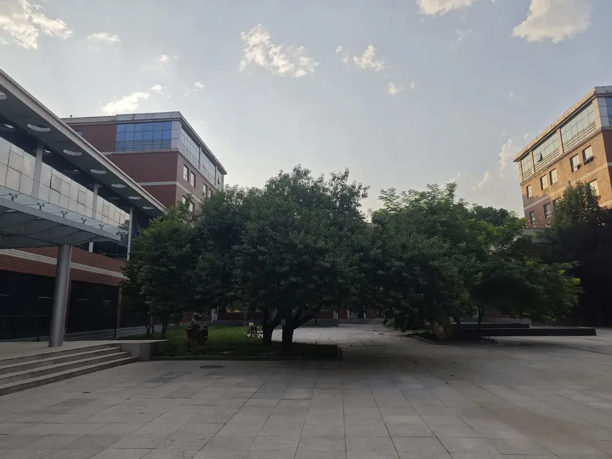
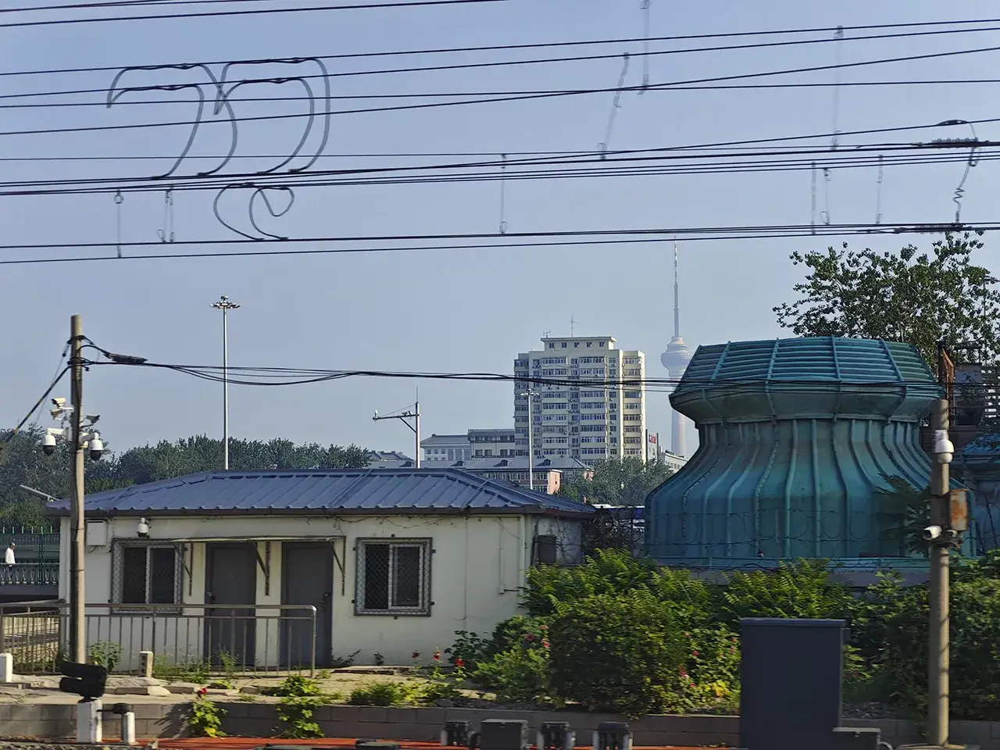

这是前言
在北方想有点时间就去北京的各大博物馆开开眼界，第一站——中国国家博物馆！刚好 6.16 是个六级考完还不会有啥事的周末，17:00 提前订票，开冲🤩！
Python 给手机拍摄的图片批量重命名：
1
2
3
4
5
6
7
8
9
10
11
12
13
| import os
file_path = r"D:\XXX"
file_name_list = []
for file in os.listdir(file_path):
file_name = file.split('_')[-1][:4] + '.jpg'
count = 1
while file_name in file_name_list:
file_name = file.split('_')[-1][:4] + '_' + str(count) + '.jpg'
count += 1
file_name_list.append(file_name)
os.rename(os.path.join(file_path, file), os.path.join(file_path, file_name))
|
为了便于展示国博的各个“宝贝”，设计一个 Exhibit 类：
1
2
3
4
5
6
7
8
9
10
11
12
13
14
15
16
17
18
19
20
21
22
23
24
25
26
27
28
29
30
31
32
33
34
35
36
37
38
39
40
41
42
43
44
45
46
47
48
49
50
51
52
53
54
55
56
57
58
59
60
61
62
63
64
65
66
67
68
69
70
71
72
73
74
75
76
77
78
79
80
81
82
83
84
85
86
87
88
89
90
91
92
93
94
95
96
97
98
99
100
101
102
103
104
105
106
107
108
109
110
111
112
113
114
115
116
117
118
119
120
121
122
123
124
125
| .exhibits-container {
display: flex;
margin: 10px 0;
padding: 10px 5px;
}
.exhibits-container.common {
border: 2px solid var(--border);
transition: border 0.5s ease-in-out;
}
.exhibits-container.rare {
border: 2px solid #1e6eff;
background: #1e6eff20;
}
.exhibits-container.epic {
border: 2px solid #8250df;
background: #8250df20;
}
.exhibits-container.legend {
border: 2px solid #ff9800;
background: #ff980020;
}
.exhibits-container.rare blockquote{
border-left: 4px solid #1e6eff;
background: #1e6eff20;
}
.exhibits-container.epic blockquote{
border-left: 4px solid #8250df;
background: #8250df20;
}
.exhibits-container.legend blockquote{
border-left: 4px solid #ff9800;
background: #ff980020;
}
.reverse {
flex-direction: row-reverse;
}
.exhibits-img-container img {
max-width: 80%;
box-shadow: 4px 4px 5px rgba(0, 0, 0, 0.5);
margin: 0 auto;
}
.exhibits-img-container .hidden {
display: none;
}
.exhibits-container-left {
max-width: 50%;
justify-content: center;
}
.exhibits-container-right {
width: 100%;
margin: 0 5px;
}
.exhibits-container-right .title {
margin: 5px auto;
font-weight: bold;
font-size: 18px;
}
.exhibits-container-right .desc {
margin: 0 auto;
padding: 0 10px;
}
.exhibits-container-left,
.exhibits-container-right {
display: flex;
flex-direction: column;
justify-content: center;
}
.f-carousel__dots>li:before{
display: none;
}
span.f-carousel__dot {
color: var(--text-primary);
transition: color 0.5s ease-in-out;
}
.f-button.is-prev {
transform: translateY(-50%) translateX(-12px) !important;
}
.f-button.is-next {
transform: translateY(-50%) translateX(12px) !important;
}
.f-carousel__dots {
transform: translateY(8px);
}
.f-carousel__slide {
display: flex;
align-items: center;
}
@media screen and (max-width: 660px) {
.exhibits-container {
flex-direction: column !important;
}
.exhibits-container-left {
max-width: 100%;
margin: 0;
}
.exhibits-container-right {
width: auto;
margin: 10px 5px 5px;
}
}
|
1
2
3
4
5
6
7
8
9
10
11
12
13
14
15
16
17
18
19
20
21
22
23
24
25
26
27
28
29
30
31
32
33
34
35
36
37
38
39
40
41
42
43
44
45
46
47
48
49
50
51
52
53
54
| var exhibitsCount = 0;
class Exhibits {
constructor(ravity, img, title, desc="", quote="") {
this.exhibitsContainer = $('<div>').addClass('exhibits-container').addClass(ravity);
exhibitsCount += 1;
if (exhibitsCount % 2 == 0) {
this.exhibitsContainer.addClass('reverse');
}
const exhibitsContainerLeft = $('<div>').addClass('exhibits-container-left');
const exhibitsImgContainer = $('<div>').addClass('exhibits-img-container');
if (img.length == 1) {
exhibitsImgContainer.append($('<img>').attr('no-figcaption', '').attr('src', '/images/loading.webp').attr('data-original', img[0][0]).attr('alt', img[0][1]));
}
else {
const fCarousel = $('<div>').addClass('f-carousel');
const fCarouselViewport = $('<div>').addClass('f-carousel__viewport');
fCarousel.append(fCarouselViewport);
const fCarouselTrack = $('<div>').addClass('f-carousel__track');
fCarouselViewport.append(fCarouselTrack);
for (const item of img) {
let fCarouselSlide = $('<div>').addClass('f-carousel__slide');
fCarouselSlide.append($('<img>').attr('no-figcaption', '').attr('src', '/images/loading.webp').attr('src', item[0]).attr('alt', item[1]));
fCarouselTrack.append(fCarouselSlide);
}
exhibitsImgContainer.append(fCarousel);
new Carousel(fCarousel.get(0), {});
}
exhibitsContainerLeft.append(exhibitsImgContainer);
const exhibitsContainerRight = $('<div>').addClass('exhibits-container-right');
const titlePara = $('<p>').addClass('title').text(title);
exhibitsContainerRight.append(titlePara);
if (desc.length > 0) {
const descPara = $('<p>').addClass('desc').text(desc);
exhibitsContainerRight.append(descPara);
}
if(quote.length > 0) {
const quotePara = $('<blockquote>').append($('<p>').text(quote));
exhibitsContainerRight.append(quotePara);
}
this.exhibitsContainer.append(exhibitsContainerLeft).append(exhibitsContainerRight);
}
render() {
$(document.currentScript).before(this.exhibitsContainer);
}
}
|
使用方法示例（用到了轮播插件 Carousel | Fancyapps UI - Robust JavaScript UI Component Library，必须提前引入）：
1
2
3
4
5
6
7
8
9
| <script>
new Exhibits('common', [
['国博/1-远古时期/0904_2.webp', '野兽残骸'],
['国博/1-远古时期/0904_3.webp', '野兽残骸'],
['国博/1-远古时期/0904_4.webp', '野兽残骸'],
], '野兽残骸',
' 祖先们与野兽相伴。',
).render();
</script>
|
参考《炉石传说》的稀有度，依据“宝贝”的名气及其做工的精湛程度，按主观臆断给这些“宝贝”分为“普通”、“稀有”、“史诗”和“传说”四个等级😍！如有异议，算我没文化。
国博里的“宝贝”太多了，短时间内不能把这些东西都讲清楚。这个系列应该会不断维护并完善其内容。
这是正文
我出发了
05:56 每日任务

夏天到了，醒得越来越早了……
大早上 5 点 40 左右起床下楼，宿管阿姨居然已经提前把宿舍门开了。吃喝拉撒完，考虑到中午在国博进餐不便，去食堂提前把肉夹馍买好了。肉夹馍阿姨跟我说这是见到我的第 4 个学期了，居然才知道我是个研究生😇。
再去实验室门口完成一下每日任务，然后乘公交去保定东站！
06:48 保定东站

之前怕起不来赶不上早发的车，买的 G6716，08:19 保定东 - 08:50 北京西，￥63。事实证明是可以在宿管阿姨开门后，在 7 点以前赶到高铁站的。于是改签 G6720，07:03 保定东 - 07:24 高碑店东 - 07:53 北京西，￥57。这样就可以赶在开门前到国博了，除去退票费还退了 4 块钱😍！
06:59 逆向高铁
这次上车方向居然跟上次进京方向相反……
07:17 燕南赵北
高碑店东站广场上的四个大字。啊，河北！大河之北，燕南赵北。乱世兵家必争之地，盛世一大冤种😭。
07:42 永定河旁
西边进京。永定河旁出现了北京园博园里的各色奇异建筑。
07:49 北京电塔

这个电视塔长得跟天津的几乎一模一样，但是比天津的矮一些。
07:50 北京西站
北京西站上面还有个老北京特色建筑。
恭喜！今天早上有北京特产可爱小雾霾！
探索国博
08:27 开始排队

下车。乘坐地铁 9 号线北京西站-军事博物馆-地铁 1 号线天安门东，￥4。
9 点开门的国博于 8 点半就已经排起了长队。

看到天安门了，来跟之前一直很想去看天安门的爱国凡哥问个好！

排队过程中来一张侧面的国博。
09:00 成功入场

经过一次近乎机场安检级别的安检，终于进场了！
看一看国博的导航，先冲 B1 楼《古代中国基本陈列》感受一下中华优秀传统文化🥳！
09:01 古代中国

来国博前还把初中历史书翻看了一遍。
09:03 远古时期
——约两百万年前至约公元前二十一世纪
远古时期分为旧石器时代和新石器时代两个阶段。旧石器时代人类使用打制石器、木棒等工具，从事采集、狩猎活动，完成了从直立人、早期智人到晚期智人的进化过程。新石器时代人们使用磨制石器，制作陶器，发明了农业和养畜业，形成了各具特色的地域文化。新石器时代晚期，社会逐步分化，出现了权贵阶层及相应的礼仪制度，在聚落分化的过程中涌现出众多城堡，社会开始向早期国家过渡。
09:14 夏商西周
——约公元前二十一世纪至公元前七七一年
夏、商、西周时期是中国古代早期国家形态的形成与初步发展阶段。这一时期，王权政治得以强化，并不断完善。青铜铸造达到鼎盛，辉煌灿烂。丰富的汉字材料，记录了当时政治、经济与文化面貌。西周统治者推行的礼制，重在彰显、维护等级秩序，对此后中国古代社会的发展产生了深远影响。
我觉得这个时期的中国文明已经发展到了一个比较高的水平，青铜器的精湛程度要比后面很多时期的都要好很多。
09:35 春秋战国
——公元前七七零年至公元前二二一年
春秋战国时期，西周以来的礼制分崩离析，社会结构发生根本性变化；铁器的广泛使用促进了生产力和社会经济的发展；学术思想百花齐放。民族间相互融合，华夏民族主体形成，整个社会在征战兼并中逐步走向统一。
风卷狂沙，兵临城下。
气贯长虹，金戈铁马。
韶华易逝，落尽多少残花，
且问苍生，谁能一统天下。
血染万里黄沙，今朝谁家天下？
醉看几度落霞，泪洒谁家铠甲。
王于兴师，厉兵秣马。
与子偕行，修我兵甲。
啊~与子同仇，啊~且为谁家？
弑君谋国，图雄争霸。
万姓流离，望断天涯。
啊~兆黎皆苦，啊~何处为家？
啊~兆黎皆苦！燕赵儿女，慷慨悲歌。河北保定遭老罪咯😭。这个时候福州还没有建城。
09:46 秦汉时代
——公元前二二一年至公元二二零年
秦汉时期，长期以来诸侯割据纷争的局面结束，专制主义中央集权制在全国范围内建立，中国历史进入大一统时代。新工艺技术的发明和应用，加速了社会经济的发展，丰富了人们的生活，中外文化交流也空前繁荣。我们的祖先在秦汉时期以其卓越的创造力，建树了中国古代文明发展史上的无数丰碑。
六王毕，四海一。
蜀山兀，阿房出。
你政哥统一了天下！大肆改革！步子迈大扯到蛋了！很快就倒台了！接着汉朝继承并弘扬了君主专制制度！
大风起兮云飞扬，
威加海内兮归故乡，
安得猛士兮守四方。